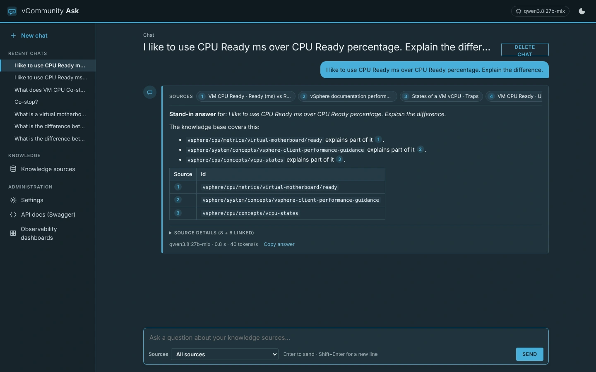
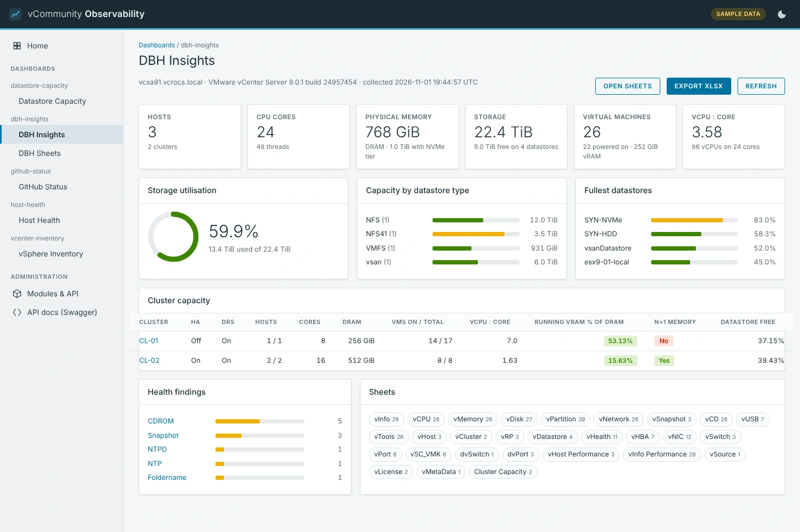
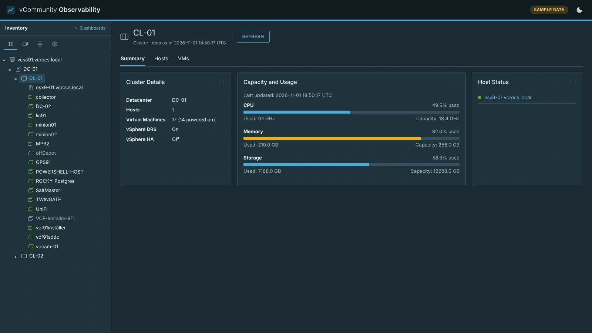
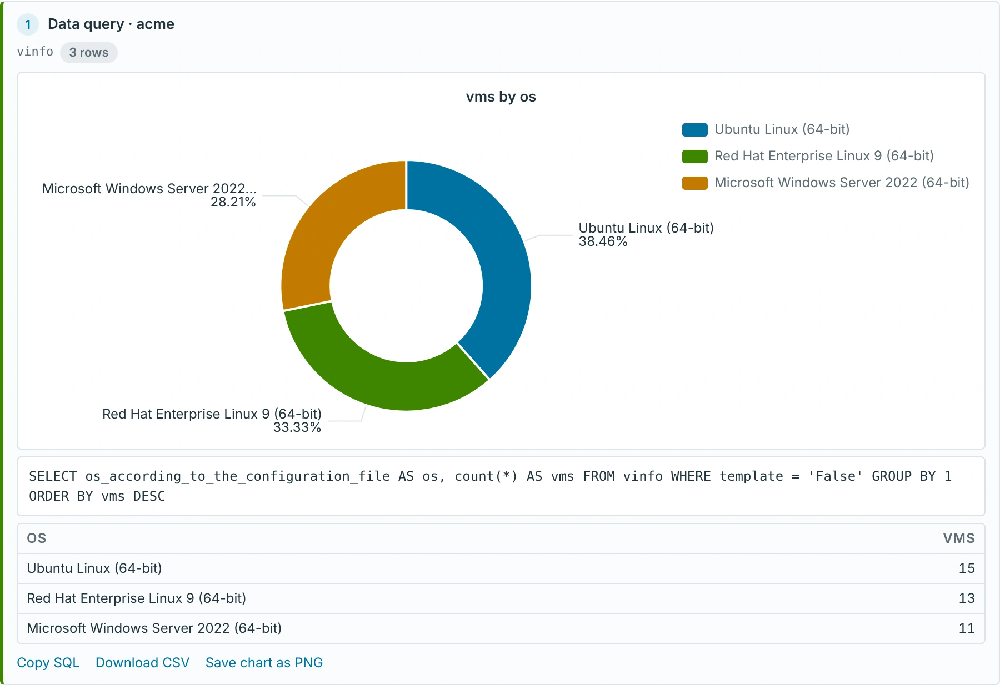
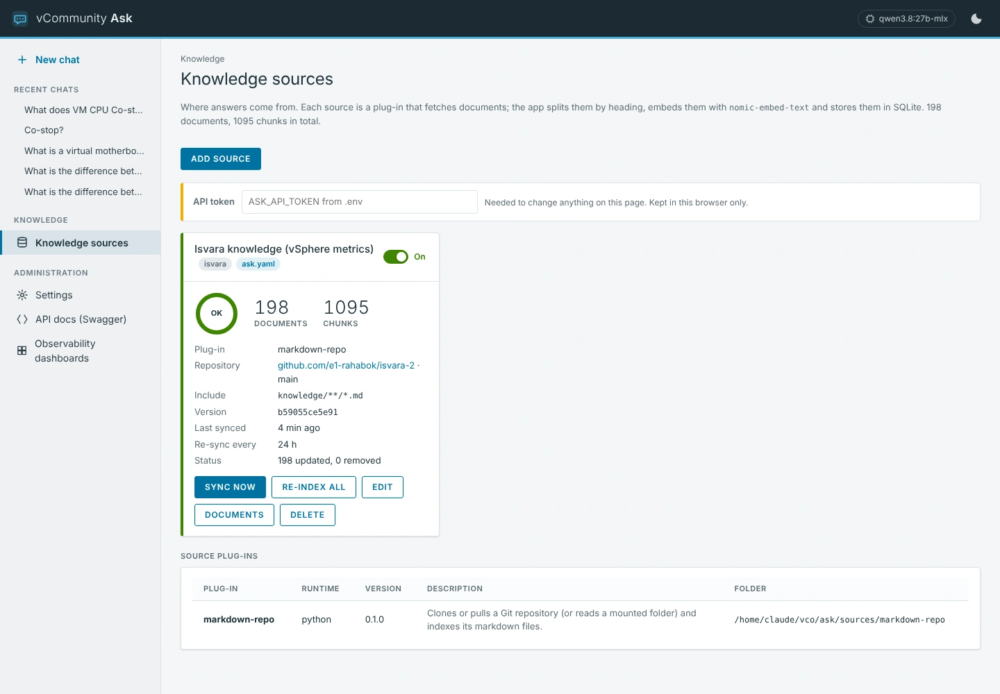

Observability
Collect data from vCenter and VCF Operations and explore it in local dashboards.
 Set up Observability
Set up Observability
Open-source project
Monitor your vSphere environment and ask questions about the sources you choose. Run either app on your own computer.
Collect data from vCenter and VCF Operations and explore it in local dashboards.
Set up Observability
Chat with your documents and spreadsheets using local Ollama models and check the sources behind each answer.

Set up Ask



Complete the shared steps, then follow the setup for one or both apps.
Install Git and a container engine. On macOS or Windows, start Docker Desktop or start Rancher Desktop with the dockerd (moby) engine. On Linux, install Docker Engine and the Compose plugin.
git --version
docker compose versiongit clone https://github.com/dalehassinger/vCommunity-Observability.git
cd vCommunity-ObservabilityCreate config/config.yaml and .env before starting Docker. Copy the generated token into .env as VCO_API_TOKEN_MPBUILDER for Observability or ASK_API_TOKEN for Ask. Generate a separate token for each app you run.
cp config/config.example.yaml config/config.yaml
cp .env.example .env
openssl rand -hex 32Copy-Item config/config.example.yaml config/config.yaml
Copy-Item .env.example .env
$rng = [System.Security.Cryptography.RandomNumberGenerator]::Create()
$bytes = New-Object byte[] 32
$rng.GetBytes($bytes)
$rng.Dispose()
-join ($bytes | ForEach-Object { $_.ToString('x2') })Keep .env private.
Uncomment VCO_MOCK=1 in .env to try the dashboards before connecting vCenter. If your container engine restricts port 514, add SYSLOG_PORT=1514.
mkdir -p data exports extra-modules control
chmod 777 control
if [ "$(uname -s)" = Linux ]; then
sudo chown -R 10001 data exports extra-modules
fi
docker compose up -d --build vco
docker compose psNew-Item -ItemType Directory -Force data, exports, extra-modules, control | Out-Null
docker compose up -d --build vco
docker compose psWait for vco to report healthy.
Visit localhost:8080. In Modules & API, select Run collectors now for a module and enter your token if prompted. Open a dashboard from the sidebar.
Remove VCO_MOCK=1 from .env and rerun docker compose up -d vco. Add your vCenter address and read-only credentials under Settings → Connections, then select Save and test. Enable SSL verification when vCenter has a trusted certificate.
Install Ollama on your computer, then follow the networking instructions for your OS so the Ask container can reach it.
ollama pull nomic-embed-text
ollama pull qwen3:8bSet ASK_CHAT_MODEL=qwen3:8b in .env to use this example. Choose a model that fits your computer's memory.
mkdir -p ask-data ask-knowledge ask-sources exports control
chmod 777 control
if [ "$(uname -s)" = Linux ]; then
sudo chown -R 10002 ask-data
fi
docker compose up -d --build vco-ask
docker compose psNew-Item -ItemType Directory -Force ask-data, ask-knowledge, ask-sources, exports, control | Out-Null
docker compose up -d --build vco-ask
docker compose psWait for vco-ask to report healthy.
Visit localhost:8081, enter your Ask token, and select Settings → Test connection. Go to Knowledge sources → Add source, wait for the sync, then select the source in New chat.
Choose PDF documents as the source type, save it, then upload a product guide or runbook. Ask a question about it and open a citation to check the relevant page.
To stop the containers, run docker compose down from the repository folder.